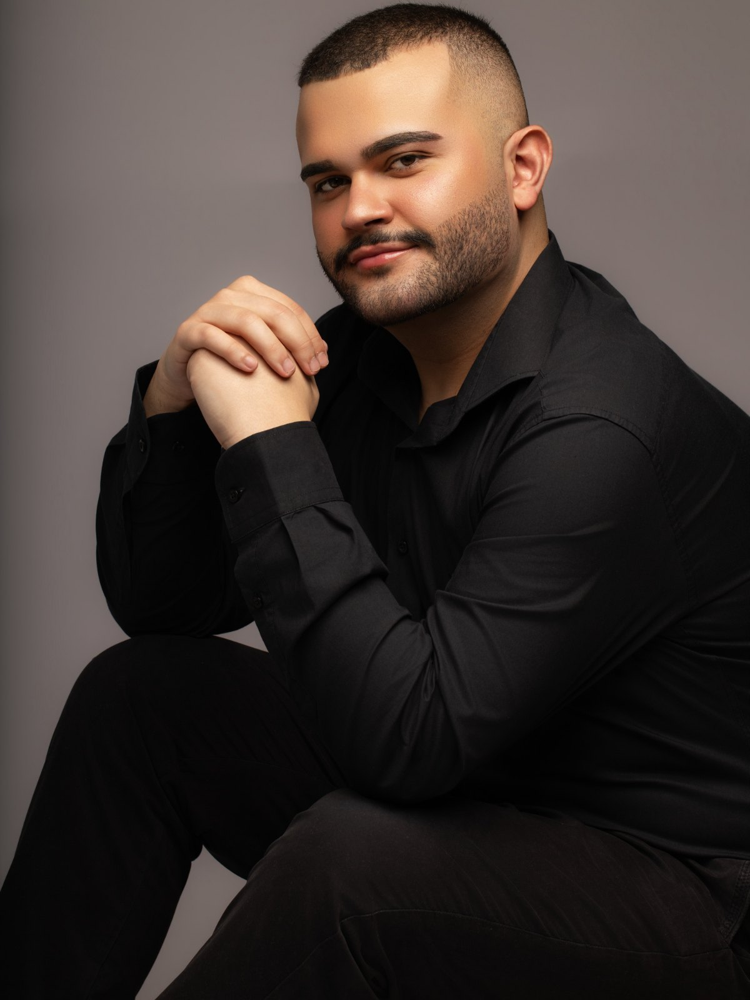
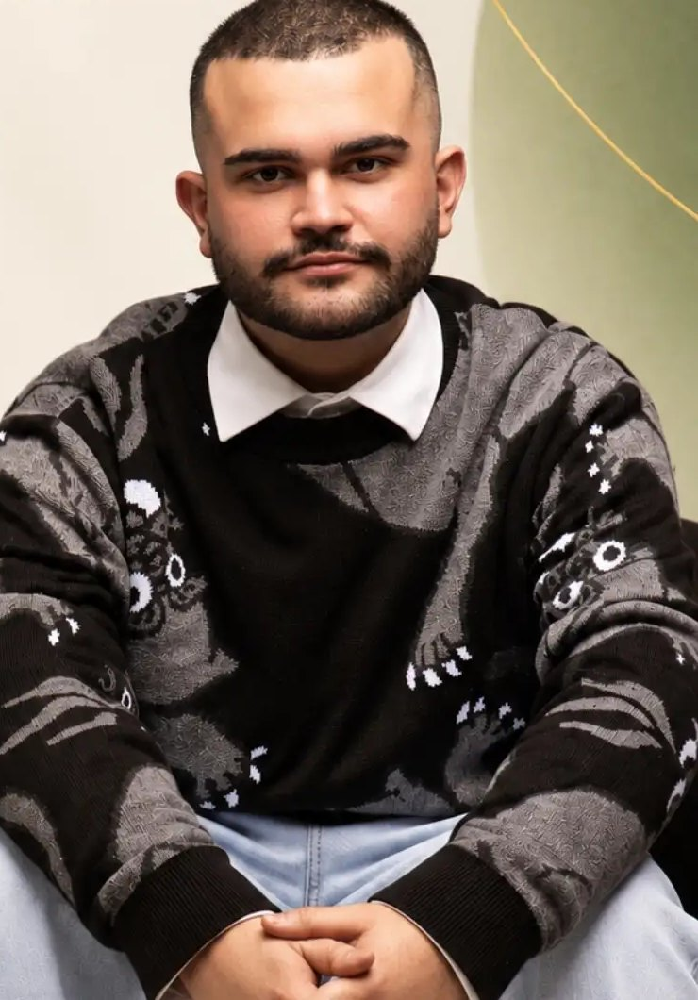
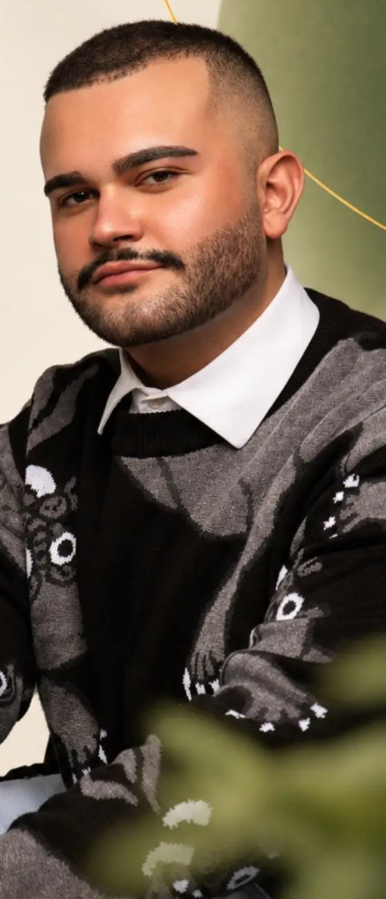

Dor que não passa merece ser escutada com calma e investigada a fundo.
Sou o Dr. Guilherme, médico e pós-graduando em Medicina da Dor. Cuido de quem convive com dor que vai e volta, e também da saúde do dia a dia.

Onde dói em você?
Toque na região do corpo e veja como costumo olhar pra esse tipo de dor na consulta.
Dor nas costas
O que eu olho na consulta
Conteúdo informativo. Não substitui a avaliação em consulta.

Prazer, Guilherme.
Passei pela urgência e emergência, pela atenção primária e por clínicas particulares. Em todos esses lugares aprendi a mesma coisa: quem sente dor quer, antes de tudo, ser escutado.
Hoje atendo em consultório particular e faço pós-graduação em Medicina da Dor, pra entender por que a dor insiste e como cuidar dela com segurança.
- Urgência e emergênciaAtendimento em UPA
- Atenção primáriaAcompanhamento em UBS
- Clínicas particularesConsultas com mais tempo pra cada paciente
- Medicina da DorPós-graduação pela Afya, em andamento
Como é a consulta
Atendimento particular, com tempo pra entender a sua história inteira.
Você chama no WhatsApp
Me diz a cidade, o melhor período e, se quiser, um pouco do que está sentindo.
Consulta sem pressa
Ouço sua história, examino e olho os exames que você já tem. A dor e você como um todo, não só o lugar que dói.
Um plano pra você
Explico o que pode estar acontecendo e combinamos juntos o cuidado e o acompanhamento.
Também acompanho
Duas cidades, o mesmo cuidado
FisioMais
Rua Pereira Landim, 969, Centro
Ibitinga, SP
Agendamento pelo WhatsApp (16) 99797-7833
Clínica Renova
Av. Campos Salles, 274, Centro
Itápolis, SP
Agendamento pelo WhatsApp (16) 99797-7833
Perguntas frequentes
Atende convênio?
Preciso de encaminhamento?
O que eu levo na consulta?
Atende só dor?
Atende urgência?
Quer marcar um horário?
Me chama no WhatsApp e a gente encontra o melhor dia pra você, em Ibitinga ou Itápolis.
Agende sua consulta